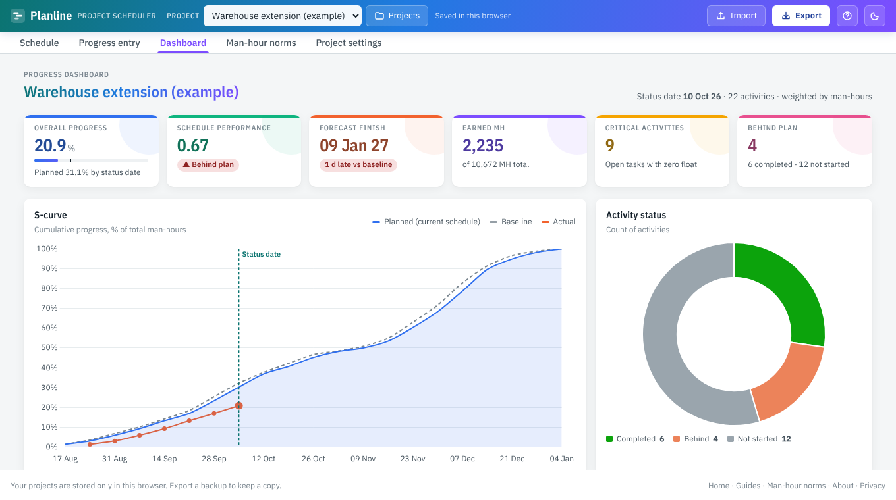

Everything a planner needs, nothing to install
Planline sits between expensive licences like Primavera P6 and generic task boards that do not understand quantities, man-hours or weighted progress.
WBS and activities
Unlimited levels with summary roll-ups and WBS codes. Type, paste from Excel or import.
Logic and critical path
FS, SS, FF and SF links with lead or lag, working calendar, holidays, total float.
Man-hour estimating
Quantity × norm × productivity factor, from 397 editable norms or your own.
Weighted progress
Record quantities by day, week or month. Weightage comes from man-hours.
Dashboard and S-curves
KPI tiles, planned vs actual S-curve, man-hour histogram and a chart builder.
Import and export
P6 .xer, MS Project XML, Excel and CSV in. Excel report, CSV and MS Project XML out.
Made for oil & gas, energy and construction
Progress on EPC work is measured in inch-dia welded, tonnes erected and metres of cable pulled, not ticked boxes. Planline works the way project controls teams do: quantities drive earned man-hours, man-hours drive weightage, and weightage gives a true overall percent complete.
- 397 indicative man-hour norms, 253 of them for oil & gas EPCM: civil & foundations, cross-country pipelines, electrical, fireproofing, instrumentation & control, insulation, mechanical equipment, painting & coating, piping erection and more
- Rules of credit by quantity, recorded day by day, week by week or month by month
- Baseline, schedule lock and planned vs actual S-curves for the monthly report

Up and running in three steps
- Start or import. Begin with a blank project, paste rows from Excel, or import a P6 .xer or MS Project XML file.
- Plan. Add durations, links, quantities and norms. Dates, critical path and man-hours update as you type.
- Track and report. Record progress, watch the S-curve and export an Excel report for the weekly meeting.
Guides for planners
Practical explanations with worked examples, each with a free tool to try it on.
How to build a project schedule
A practical, step-by-step method for building a construction or EPC project schedule: scope and WBS, activities, durations from quantities, logic, calendars, critical path review, baseline, and a 14-point quality checklist.
Critical path method
Learn the critical path method: forward and backward pass, early and late dates, total float, and FS, SS, FF, SF links with lag. Then calculate the critical path of your own schedule free online.
Progress measurement and S-curves
How to measure physical progress on EPC and EPCM projects: weightage from man-hours, earned man-hours, quantity-based percent complete, weighted overall progress and planned vs actual S-curves, with a worked example.
Earned value management
Earned value management in plain language: planned value, earned value, actual cost, schedule and cost variance, SPI, CPI, EAC, ETC and TCPI, with a worked example in man-hours for a construction project.
Piping man-hour estimate
Estimate piping installation man-hours step by step: take-off from isometrics, inch-dia and metres, weld, erection, valve, support and test norms, productivity factors, and a worked example with crew and duration.
XER file viewer
Open and view a Primavera P6 .xer file without a P6 licence. See the WBS, activities, relationships, critical path and Gantt chart, then export to Excel or MS Project XML.
Frequently asked questions
Is Planline really free?
Yes. There is no trial, licence or account. The site may show ads to cover its costs.
Where are my schedules saved?
In your own browser on your own device. Nothing is uploaded unless you choose to sign in with your email or Google account, which saves your projects to your account so they open on any device. Use Export › Project backup to keep your own copy.
Can I open Primavera P6 and MS Project files?
Yes. Import a P6 .xer file or an MS Project XML file. Native .mpp files must first be saved as XML from MS Project or the free ProjectLibre.
Does it work on a phone?
It works in any modern browser. A laptop or tablet is more comfortable for editing a schedule; a phone is fine for checking progress.
Who is it for?
Planners, project controls engineers, package and site engineers, subcontractors and students working on EPC, EPCM, oil and gas, energy and construction projects.
Your next schedule, ready in minutes
Free, private and built for project controls.
Open the scheduler